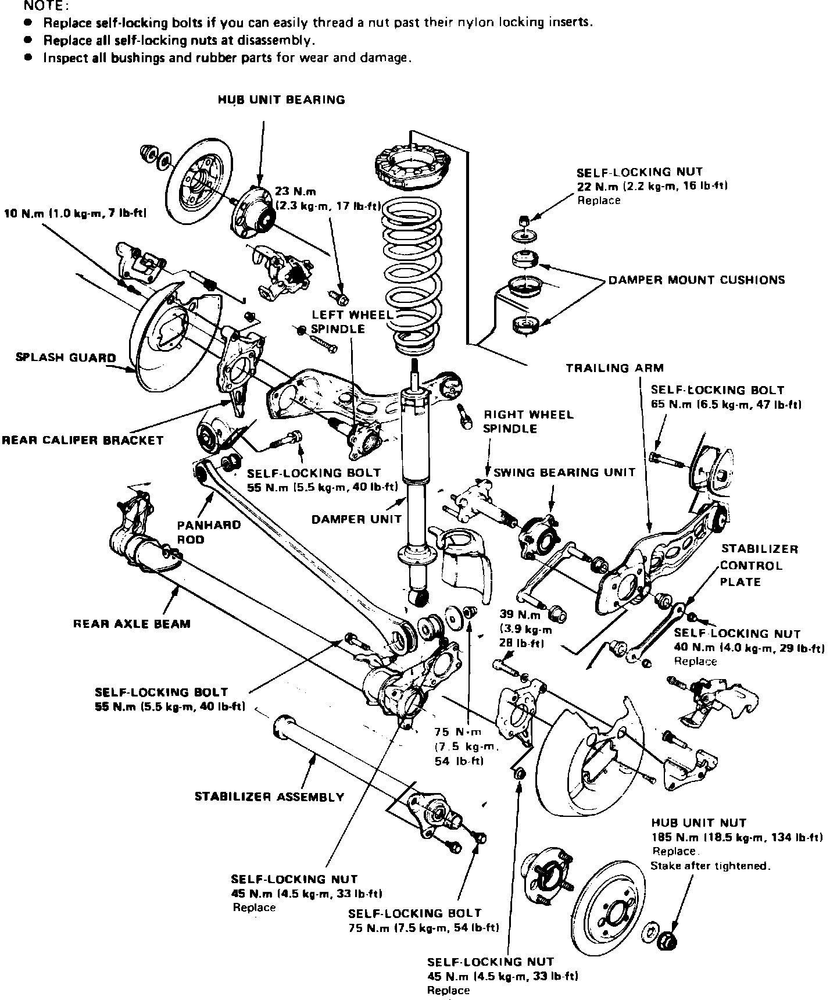
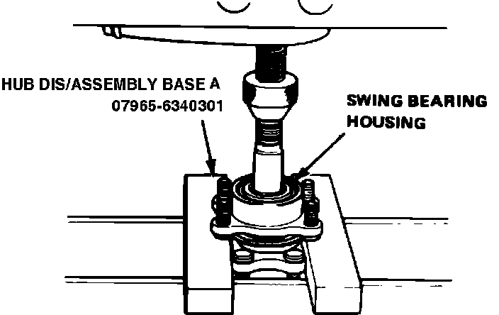
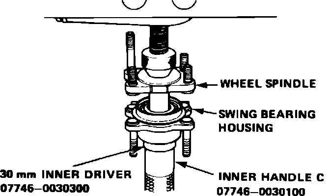

Trailing Arm: Service and Repair
Fig. 1 Exploded view of rear suspension components. Integra:

Swing Bearing Replace
1. Raise and support rear of vehicle and remove wheel and tire assembly.
2. Remove splash guard and caliper bracket.
3. Remove stabilizer control plate, then unfasten trailing arm from swing bearing housing unit, Fig. 1.
Fig. 6 Swing bearing housing removal. Integra:

4. Remove rear wheel spindle from axle beam, then separate spindle from swing bearing housing, Fig. 6.
5. Remove swing bearing inner race using a suitable puller.
Fig. 7 Swing bearing housing installation. Integra:

6. Reverse procedure to install. Press wheel spindle into bearing as shown in Fig. 7.